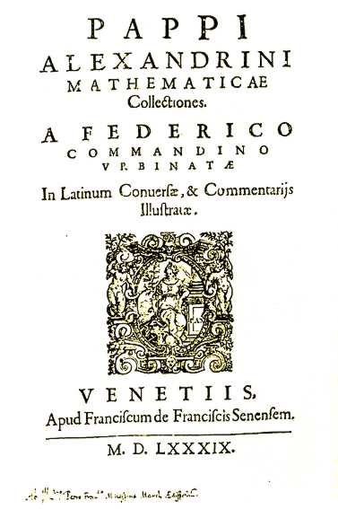

Welcome to the Mathematical World!
Pappus of Alexandria
Last Great Greek Geometer of Antiquity
Pappus of Alexandria (c. 290 – c. 350 CE) was one of the final great figures of the ancient Greek mathematical tradition. His monumental work, the Mathematical Collection (Synagoge), served both as a compendium of earlier mathematics and a repository of original results. Written in eight books, it aimed to preserve and explain the geometrical and mechanical knowledge of his predecessors, making it a crucial link between ancient and medieval mathematics.
Pappus’s writings cover topics ranging from geometry and arithmetic to astronomy and mechanics. In Book VII, he introduced the Pappus Centroid Theorem, which in modern form states: \[ V = A \cdot d, \] where \( V \) is the volume of a solid of revolution, \( A \) the generating area, and \( d \) the distance traveled by its centroid. This result was a precursor to integral calculus, later rediscovered by Cavalieri and Guldin.
Pappus also discussed projective properties of figures, foreshadowing projective geometry. His problem-solving style often involved geometric transformations, the use of loci, and the construction of ingenious mechanical devices.
He was deeply concerned with the methods of analysis and synthesis, the two fundamental approaches in Greek mathematics: analysis, which assumes the result and works backward, and synthesis, which builds from known principles to prove the result.
The Collection preserved many otherwise lost works, including the contributions of Euclid, Apollonius, and Archimedes. Without Pappus, much of the knowledge from the Hellenistic era might have vanished entirely.
Through Arabic translations, Pappus’s influence extended into the Islamic Golden Age, and through Latin translations, into Renaissance Europe. He is often regarded as the “last of the great Greek geometers” before the decline of ancient mathematical scholarship in the West.
His blend of exposition, preservation, and innovation makes him a pivotal figure in the bridge between classical and early modern mathematics.